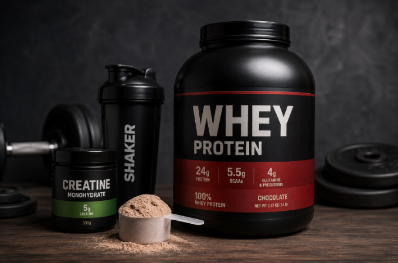

Основні види протеїну
- Сироватковий протеїн — швидко засвоюється організмом.
- Казеїновий протеїн — повільно засвоюється та підходить для вживання перед сном.
- Соєвий протеїн — рослинний варіант для вегетаріанців.
- Яєчний протеїн — містить якісний білок.
Протеїн — це одна з найпопулярніших спортивних добавок у світі. Основною складовою протеїну є білок, який необхідний організму для росту та відновлення м'язів.
Найчастіше протеїн використовують спортсмени, люди які займаються фітнесом, бодібілдингом або просто ведуть активний спосіб життя.
Протеїнові коктейлі допомагають швидше отримати необхідну кількість білка після тренування.

| Вид | Особливість |
|---|---|
| Сироватковий | Швидке засвоєння |
| Казеїновий | Повільне засвоєння |
| Соєвий | Рослинний білок |